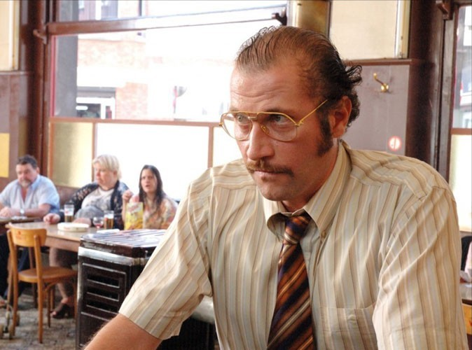

Dikkenek, le soundboard
Appuie sur la touche de ton clavier pour entendre la phrase.
Ou clique dessus.
Appuie sur une des phrases pour l'entendre.
-
A
Achever avec 50 euros
-
B
Adieu petit lapin
-
C
Si aujourd'hui, tu ressembles plus...
-
D
Arrêter un bus
-
E
Aucune allure
-
F
Autant de bière
-
G
Bercée trop prêt du mur
-
H
Boire un verre
-
I
Mais non dans la boite à gants
-
J
Bonjour Sabine
-
K
Bouche fermée
-
L
Un bout de weekend
-
M
Des grosses nénés, des grosses cuisses
-
N
Ca depend de toi
-
O
Ca va suffir maintenant
-
P
C'est une cabine publique
-
Q
Cacher
-
R
Camion poubelle
-
S
J'me suis fais carjacker
-
T
Casser une jambe
-
U
Centre de vacances
-
V
Chanteur de rap hip-hop
-
W
Je vais chercher le poney
-
X
Mange des chips
-
Y
Cinéma porno
-
Z
T'es pas en classe verte?
-
Connasse va
-
Couilles
-
Coup de boule du nouvel an
-
Cracher comme un lama
-
Deux bières s'vous plait
-
Deux cludes de l'IAD
-
Vous dites pas action?
-
Pas trop dur comme boulot
-
Education minimum
-
Elle est morte la maitresse
-
Elle sait dire merci
-
T'embrasses pas ta mère?
-
Encore une petite
-
Enleve le bas
-
Epais comme un cable de frein à main
-
T'es épilée, pas épilée
-
Etudiants de TV
-
C'est excessivement énervant
-
Excuse-toi
-
Flamande bien gaulée
-
Gang bang
-
Le grand amour
-
Hé ket !
-
IAD, inconnu au bataillon
-
Identite sexuelle
-
Idiot
-
Il est moche
-
Il est tout à fait fou
-
Si ça t'intéresse
-
Si c'est pas de la jalousie
-
Parce que jamais deux sans trois
-
Japonaise dans sa gueule
-
Je suis Claudy
-
Je veux quitter cette ville
-
Ne la juge pas
-
Tu roulais dans un kinder
-
C'est moi le king de la route
-
Je vous prête pas mon King Kong
-
J'aime bien la mousse
-
Les laides
-
Licenciement
-
Mal baisée
-
Mal reveillée
-
Materiellement pas le temps
-
Messieurs, dame, bonjour
-
Michael Jackson
-
Mignon le petit cochon
-
Moche
-
Négocier avec ses nichons
-
Noir et blanc
-
Offrir des cailloux
-
Ils t'ont pas raté
-
Ta tête est déjà originale
-
Ou tu sors ou je te sors
-
Pas de tututututu
-
C'est pas à emporter
-
Je te paye une partie
-
Petite culotte
-
Petite soeur
-
Photo de charme
-
Place Poelaert
-
Je plais pas à tout le monde
-
Poli ou pas poli
-
Prendre ta raclée
-
P'tite bite
-
Quel clète
-
Qu'est ce qui a, non
-
Qui veut jouer au mort
-
Remixer
-
Réussir à rien foutre
-
Je rime et je rame
-
Rolland garros
-
La schnouf, c'est un fléau
-
Sent la merde
-
Si je te dis
-
Le soleil se lève
-
T'as vu ça madame?
-
Tchouk
-
Tendu comme une crampe
-
Terminer bonsoir
-
Tomber de son sus
-
Touche les seins
-
Tout est négociable
-
Trou de balle
-
Tu bois pas tout gros tas
-
Tu ne me vois pas
-
Un petit clic
-
Une petite canette, une petite vedett
-
Va te faire refaire, alien
-
Venir vers moi
-
Vieille truie
-
Viré de chez viré
-
Voiture de sport
-
Vulgaire
-
Y a une gamine avec des yeux ...